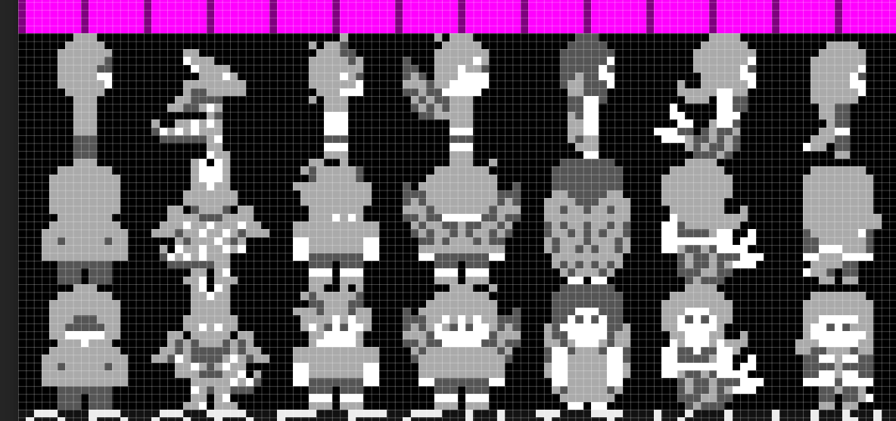
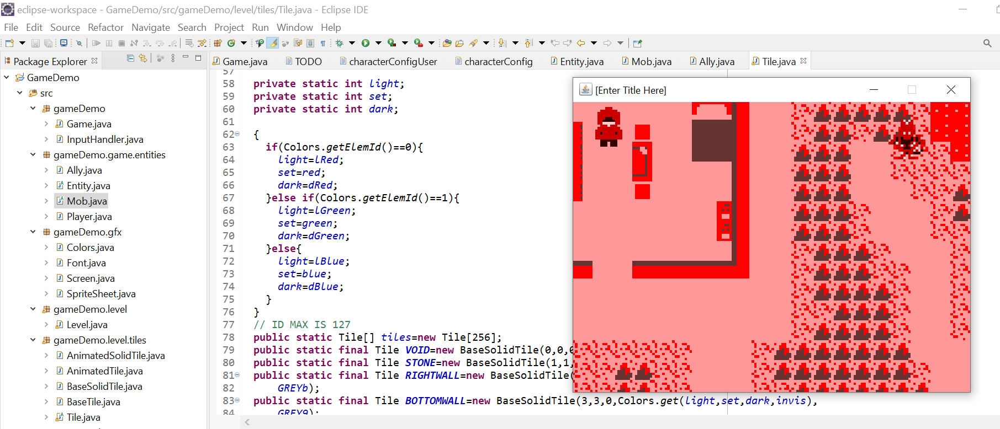

[Enter Title Here] is a 2D role-playing video game created by Kaytee Tiede. This is an in-progress game that playable demo.
You start as a nameless character living in a peaceful world, but this peace might not last long.
I made this game because the mechanics of a video game thrill me. I love coding and creating, and pieces of [ETH] will have refrences to other games that have shaped my life. They're the games that have gotten me through depressive episodes, connected me to long lasting friends, and are the base inspiration for everything I create.
 